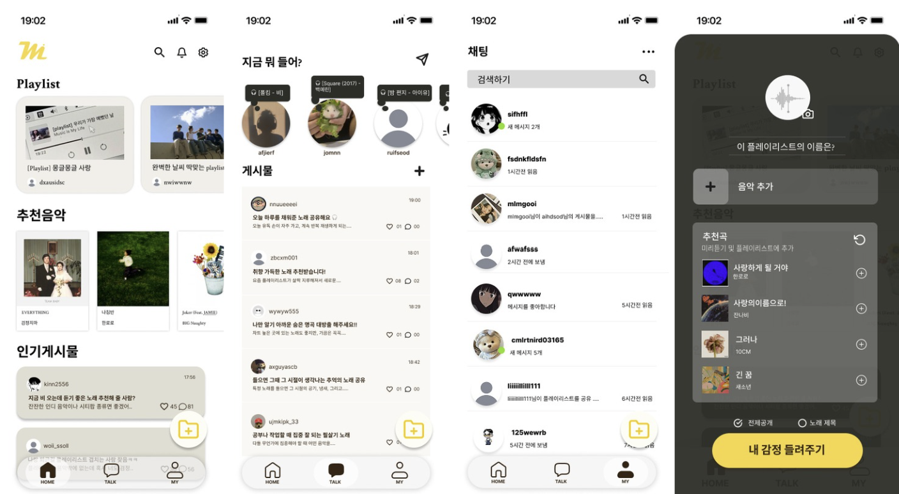
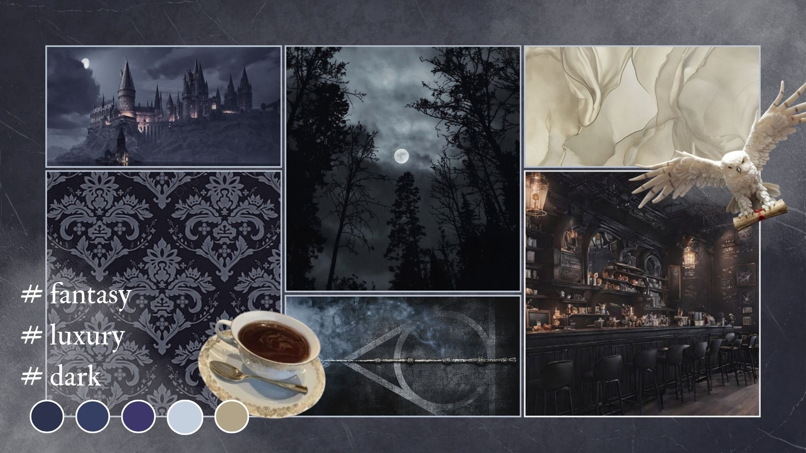
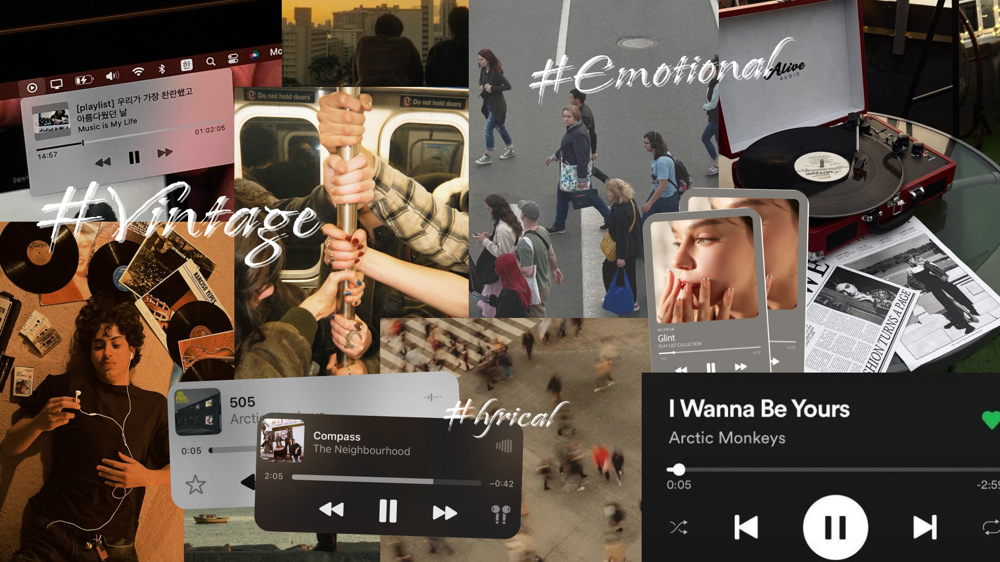
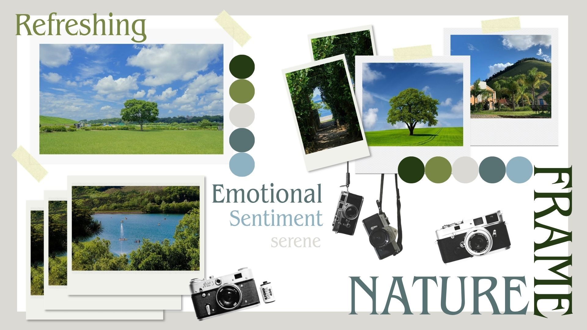

Portfolio
01. AI Generative Design

생성형 AI를 활용하여 다양한 공간과 분위기의 패션 이미지를 제작하였습니다.
동일한 인물을 중심으로 여러 콘셉트를 구현하며 AI 기반 이미지 생성 기술의 활용 가능성과 시각적 표현의 확장성을 탐구하였습니다.
02. Detail Page Design

제품의 핵심 정보와 브랜드 가치를 효과적으로 전달하기 위해 상세페이지를 기획·디자인하였습니다.
정보의 가독성과 시각적 완성도를 높여 소비자의 이해와 구매 경험을 향상시키는 데 중점을 두었습니다.
03. Lookbook

브랜드의 시즌 아이템을 활용하여 다양한 스타일링을 기획하고 룩북 이미지를 제작하였습니다.
제품별 조합과 컬러 밸런스를 고려해 착장 구성을 설계하고, AI를 활용한 모델 이미지 생성 및 레이아웃 작업을 통해 브랜드의 감성을 효과적으로 전달하고자 하였습니다.
04. UX/UI Project

음악 취향을 기반으로 사용자들이 플레이리스트를 공유하고 소통할 수 있는 모바일 서비스의 UX/UI를 기획·디자인하였습니다.
사용자 리서치와 페르소나 설정을 바탕으로 정보 구조를 설계하고, 홈 화면, 커뮤니티, 채팅, 플레이리스트 생성 기능까지 전반적인 사용자 흐름을 구성하였습니다.
직관적인 인터페이스와 편리한 사용 경험을 제공하는 데 중점을 두었습니다.
05. Moodboard Collection


